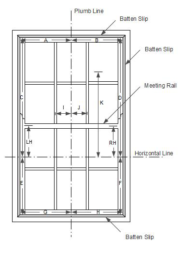
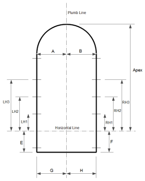

From the centre point on the meeting rail, project a plumb line to the top and bottom batten slips.
Set out a horizontal line below the meeting rail to the left and right hand batten slips.
It may be necessary to wedge the lower sash in position to prevent the meeting rail from
moving while the measurements are being taken.
The horizontal measurements, A, B, G and H should be from the plumb line to the inside
face of the left and right hand batten slips.
The vertical measurements, C, D, E and F should be from the horizontal line to the
inside face of the top and bottom batten slips.
You may also need the distance from the plum line to the centre of the left glazing bar, I,
and to the centre of the right glazing bar, J,
and from the horizontal line to the division
between the top flap and the vertical panels, K.
The distances from the horizontal line to the centre of the left hand middle hinge, LH, and
to the centre of the right hand middle hinge, RH, are also required.

If your window has an arched top, you will require the measurement from the
horizontal line to the apex of the arch.
The plumb line should be set out such that the dimensions A and B are equal.
If your shutters for an arched top window are to be set in to the reveal you will also need the
depth of the reveal to the hinges.
If the depth of the reveal to the hinges is 36 mm or more, wing panels will be drawn to fill
the gap left by the inset arched top.
From these measurements, glass panels will be manufactured to suit the size and shape of your
window. When fitted, there will be a gap of 3 or 4 millimeters around each panel. It is
important that you set out the plumb line and horizontal line as accurately as possible and
all your measurements should be to the nearest millimetre.
A self levelling Cross Line laser level may be used provided that the thickness of its
projected lines is sufficiently fine for precision work. Your level should be
calibrated from time to time against a reference horizontal. You should also check that the
lines form a perfect right angle by pointing the level at a plain surface and setting out a point
along the horizontal line 800 mm from the centre and another point along the vertical line 600 mm
from the centre. The distance between the two points should be 1000 mm exactly.
Please also observe all relevant safety precautions when using a laser. It may be
necessary to blackout your windows while using laser equipment to avoid any risk to the public.
If a laser is used, it should be set up so that its axis is at right angles to the window.
If it is not possible to make the projected vertical line coincide exactly with the centre
point on the meeting rail, the deviation should be measured and applied as a correction when
marking the top and bottom batten slips. The plumb line as set out should pass through
the centre point on the meeting rail.
The measurements, A to K, LH and RH, are input to an application, Glass Shutters,
which generates scripts for running in Dassault Systemes DraftSightTM
which produces the drawings for computer aided manufacture. The scripts produce flipped images
suitable for projecting onto the coated side of the glass.
The DraftSightTM application is available from
www.3ds.com/products-services/draftsight.
To run Glass Shutters you will first need to install the latest
version of Java from
Java.com.
Then, download and install the desktop shortcut for running Glass Shutters.
This program is free software: you can redistribute it and/or modify it under the terms of
the GNU General Public License as published by the Free Software Foundation, either version 3 of the
License, or (at your option) any later version. The source code is located in:
<Program Files location>\Donald G Gray\Glass Shutters\src\
An Android version of Glass Shutters is available on
Samsung Apps.
Copyright © 2017 Donald G Gray
{kind=link}